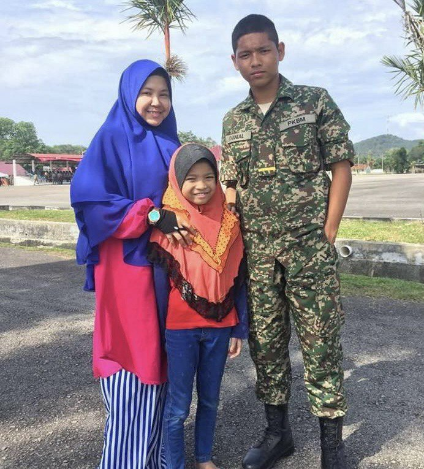
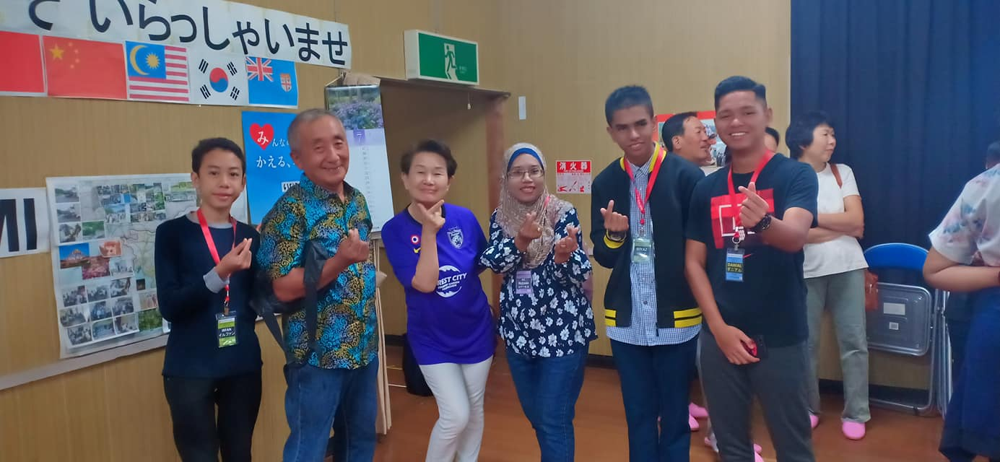
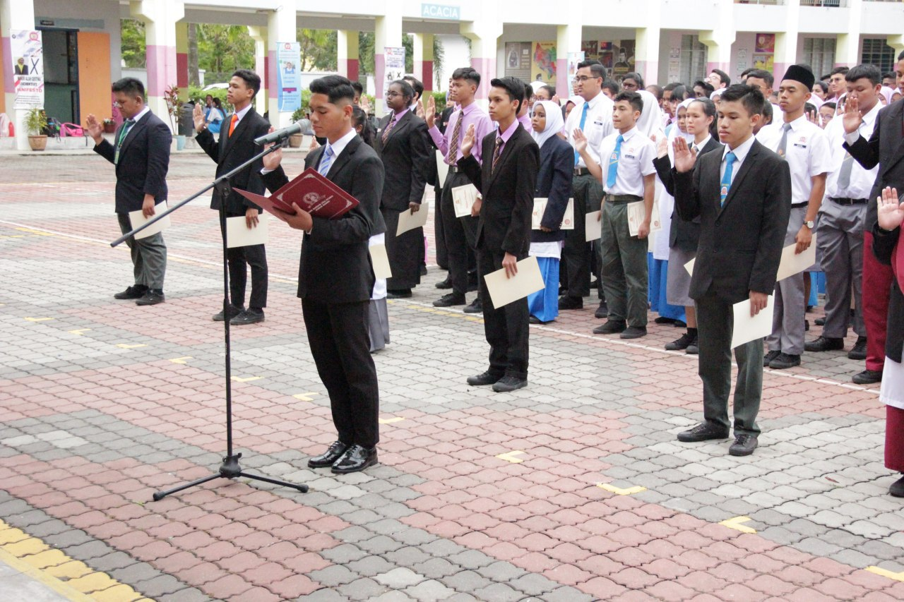
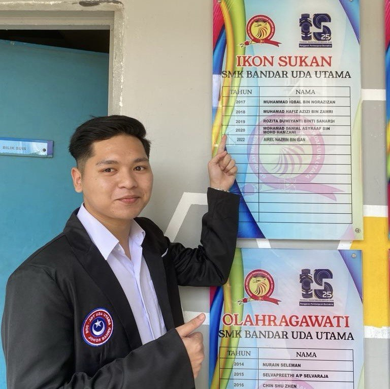
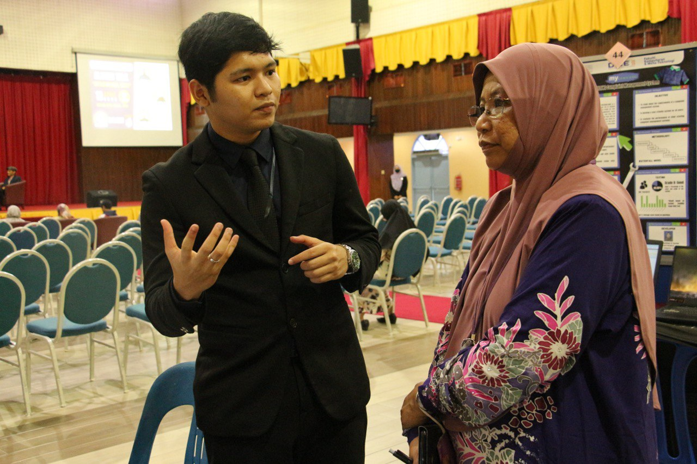

Hello Buddy
"This is my qualification"
"in 2017, when I was studying at SMK Tasek Utara, I was called to join the Persatuan Kadet Bersatu Malaysia (PKBM) and I was in the 6th Renjimen Ranger Diraja (6RRD). My highest achievement with 6RRD at the state level was the cross -hurdle runner -up. In addition, the runner -up of the arms parade. I was in camp for a month and 2 weeks."

"In 2019,when I was studying at SMK Bandar Uda Utama, I was selected in the 10 best groups of students to study in Japan for 2 weeks and this program was participated by 4 schools, 2 from Johor and 2 from Selangor. The purpose of this program was to select the best leader from 4 schools and achievements i followed this program is, i was selected as the best leader and i got the title of international student leader."

"In the year 2020 at SMK Bandar Uda Utama,27 March 2020 I was appointed as the head student at the school. This is my highest achievement as long as I am a student and this moment I will never forget."

"I was awarded as the school sports icon in 2020 at SMK Bandar Uda Utama. This was due to my achievements representing JOHOR in football and I was the team captain at that time."

"I have been appointed and selected to serve as the YDP for computer science courses for the year 2022/2023 at UPSI."
